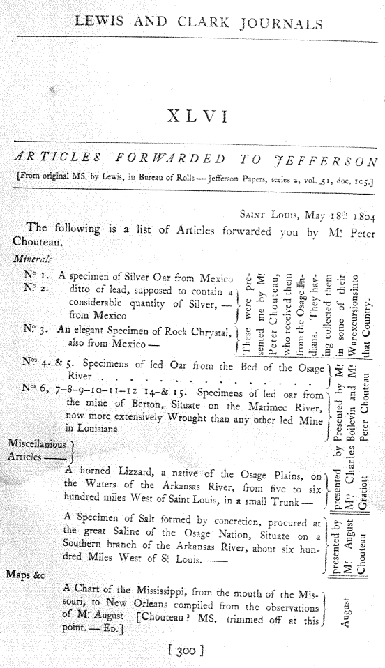

<div2 type="appendix" n="XLVI">
<pb n="300"/>
<head type="main">XLVI</head>
<head type="sub"><i>ARTICLES FORWARDED TO JEFFERSON</i></head>
<head type="desc">[From original MS. by Lewis, in Bureau of Rolls — Jefferson Papers, series 2, vol. 51, doc. 105.]</head>
<opener>
<dateline>
<name type="place"><smcap>Saint Louis</smcap></name>, <date value="1804-05-18">May 18<sup>th</sup>.. 1804</date></dateline>
</opener>
<p>The following is a list of Articles forwarded you by M<sup>r</sup>. Peter |
Chouteau.</p>
<list>
<item>
<list>
<head><sup>Minerals</sup></head>
<label>N<sup>o</sup>. 1.</label><item><p>A specimen of Silver Oar from Mexico</p></item>
<label>N<sup>o</sup>. 2.</label><item><p>ditto of lead, supposed to contain a |
considerable quantity of Silver, — |
from Mexico<ptr target="nA46.1"/>
<note id="nA46.1" place="right" anchored="no"><p>These were pre- |
sented me by M<sup>r</sup>. |
Peter Chouteau, |
who received them |
from the Osage In- |
dians. They hav- |
ing collected them |
in some of their |
War excursions into |
that Country.</p></note>
</p></item>
<label>N<sup>o</sup>. 3.</label><item><p>An elegant Specimen of Rock Chrystal, |
also from Mexico —<ptr target="nA46.1"/></p></item>
<label>N<sup>os</sup>. 4. & 5.</label><item><p>Specimens of led Oar from the Bed of the Osage |
River . . . . . . . . . . . . . . .<ptr target="nA46.2"/>
<note id="nA46.2" place="right" anchored="no"><p>Presented by M<sup>r</sup>. |
Boilevin and M<sup>r</sup>. |
Peter Chouteau</p></note>
</p></item>
<label>N<sup>os</sup> 6, 7–8–9–10–11–12 14–& 15.</label><item><p>Specimens of led oar from |
the mine of Berton, Situate on the Marimec River, |
now more extensively Wrought than any other led Mine |
in Louisiana<ptr target="nA46.2"/></p></item>
</list>
</item>
<item>
<list>
<head>Miscellanious |
Articles —</head>
<item><p>A horned Lizzard, a native of the Osage Plains, on |
the Waters of the Arkansas River, from five to six |
hundred miles West of Saint Louis, in a small Trunk —<ptr target="nA46.3"/>
<note id="nA46.3" place="right" anchored="no"><p>presented by |
<unclear>M<sup>rs</sup>.</unclear> Charles |
Gratiott</p></note>
</p></item>
<item><p>A Specimen of Salt formed by concretion, procured at |
the great Saline of the Osage Nation, Situate on a |
Southern branch of the Arkansas River, about six hun- |
dred Miles West of S<sup>t</sup>. Louis. —<ptr target="nA46.4"/>
<note id="nA46.4" place="right" anchored="no"><p>presented by |
M<sup>r</sup>. August |
Chouteau</p></note>
</p></item>
</list>
</item>
<item>
<list>
<head>Maps &c</head>
<item><p>A Chart of the Mississippi, from the mouth of the Mis- |
souri, to New Orleans compiled from the observations |
of M<sup>r</sup>. August [Chouteau? MS. trimmed off at this |
point. — <smcap>Ed</smcap>.]<ptr target="nA46.5"/>
<note id="nA46.5" place="right" anchored="no"><p>August</p></note>
</p></item>
</list>
</item>
</list>
</div2>